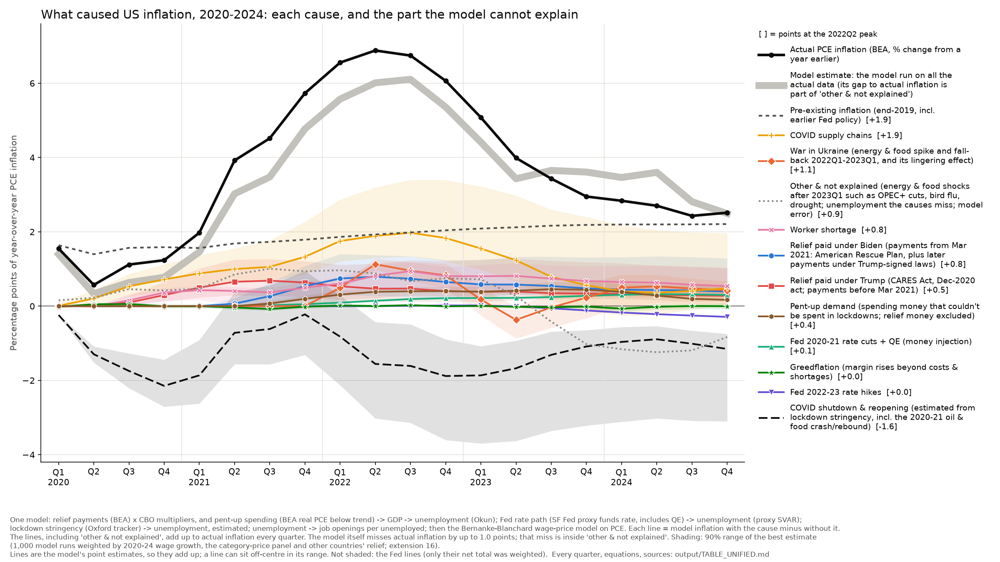
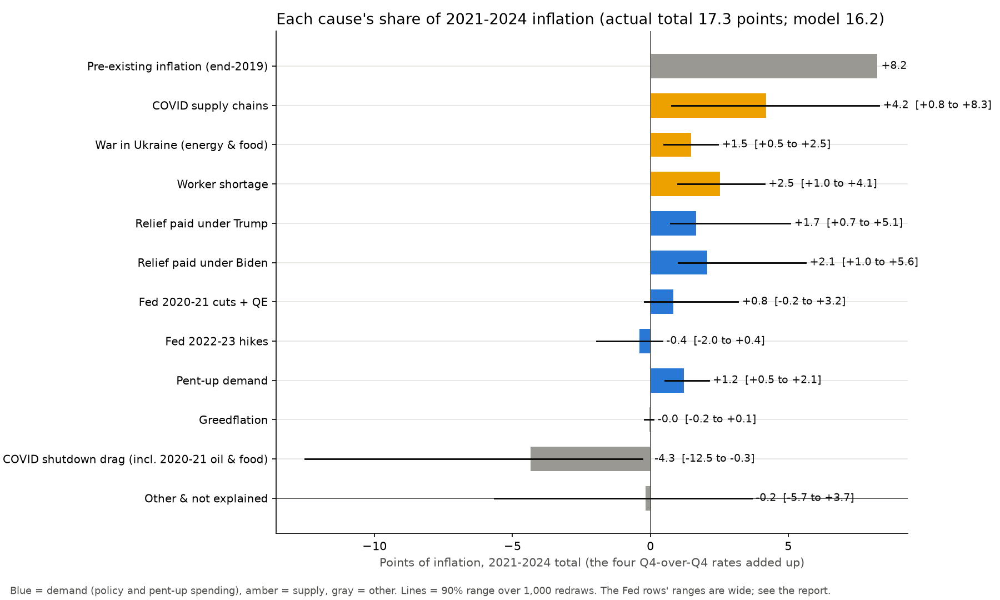
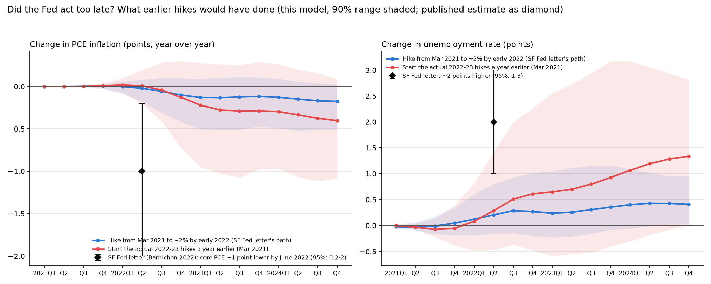
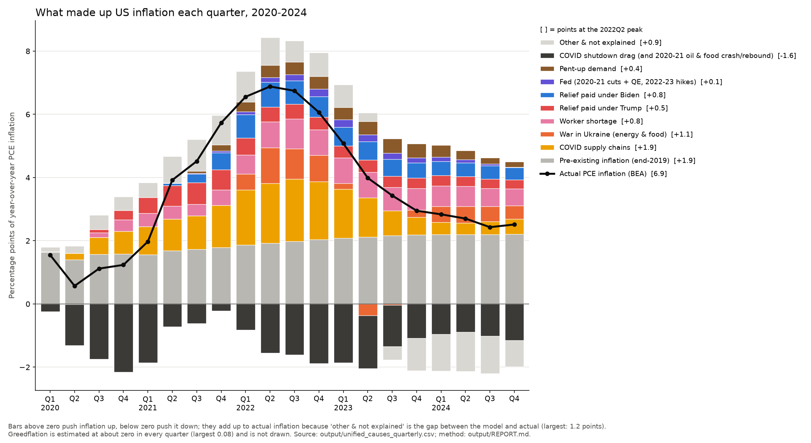

What Caused America's Inflation
One model puts every claimed cause of US inflation from 2020 through 2024 on the same scale, quarter by quarter, with uncertainty ranges, and shows openly what it can't explain. Every number has a public source.
Inflation, measured by the PCE price index (the Fed's target measure), was 1.5% at the start of 2020. It peaked at 6.9% in the second quarter of 2022 and was back to 2.5% by the end of 2024. Depending on who you ask, the cause was Biden's stimulus, Trump's stimulus, the Fed printing money, the war in Ukraine, broken supply chains, pent-up demand, or corporate greed.
Each claim usually comes with its own chart and method, so they can't be compared. I built one model that measures all of them the same way. Adding up the four years 2021–2024, prices rose by 17.3 points of inflation. 8.2 of those points are the model's “pre-existing” line: where its equations take inflation if nothing new had happened after 2019 (explained below). The other 9.0 points are what needs explaining. The model accounts for all but about 1 point of the total, and that gap is shown, not hidden.
A technical report gives the equations, robustness checks and comparison with published research.
The answer in one chart

Every number in the chart
Points of year-over-year PCE inflation in the four quarters ending each date. Under each value: its 90% range (the chart's shading; the Fed lines aren't shaded because only their net total was checked against outside evidence). The 2021–24 total adds the four fourth-quarter values. Its range comes from the best estimate's redraws, so the middle of a range need not sit at the point value. Rows other than actual inflation and the model estimate add up to actual inflation. Source numbers refer to the Sources list at the end; equations are listed below the table. The same numbers with 68% ranges, one row per cause and quarter: reproduce_long.csv; the model's own (wider) ranges: full table.
| Line | 2020 Q1 |
2020 Q2 |
2020 Q3 |
2020 Q4 |
2021 Q1 |
2021 Q2 |
2021 Q3 |
2021 Q4 |
2022 Q1 |
2022 Q2 |
2022 Q3 |
2022 Q4 |
2023 Q1 |
2023 Q2 |
2023 Q3 |
2023 Q4 |
2024 Q1 |
2024 Q2 |
2024 Q3 |
2024 Q4 |
2021–24 total | 90% range of total | Data (Sources #) | Equations |
|---|---|---|---|---|---|---|---|---|---|---|---|---|---|---|---|---|---|---|---|---|---|---|---|---|
| Actual PCE inflation | +1.55 | +0.57 | +1.12 | +1.24 | +1.98 | +3.92 | +4.52 | +5.73 | +6.56 | +6.88 | +6.75 | +6.07 | +5.08 | +3.99 | +3.43 | +2.95 | +2.84 | +2.70 | +2.43 | +2.52 | +17.3 | 1 | E2 | |
| Model estimate: the model run on all the actual data (not a sum of the rows below) | +1.40 | +0.34 | +0.64 | +0.78 | +1.46 | +3.02 | +3.48 | +4.77 | +5.57 | +6.01 | +6.11 | +5.36 | +4.41 | +3.43 | +3.65 | +3.61 | +3.46 | +3.60 | +2.81 | +2.49 | +16.2 | all below | E10–E12 | |
| Pre-existing inflation (end-2019 momentum) | +1.64 | +1.40 | +1.57 | +1.59 | +1.56 | +1.69 | +1.73 | +1.79 | +1.86 | +1.93 | +1.98 | +2.04 | +2.09 | +2.12 | +2.17 | +2.19 | +2.20 | +2.20 | +2.20 | +2.21 | +8.2 | 11, 13 | E14 | |
| COVID supply chains | +0.01−0.1 to +0.1 | +0.21+0.0 to +0.4 | +0.53+0.3 to +0.9 | +0.72+0.4 to +1.1 | +0.88+0.5 to +1.4 | +1.00+0.7 to +1.6 | +1.06+0.7 to +1.8 | +1.33+0.9 to +2.3 | +1.75+1.2 to +2.9 | +1.89+1.3 to +3.2 | +1.98+1.3 to +3.4 | +1.83+1.2 to +3.4 | +1.55+1.0 to +3.2 | +1.23+0.7 to +3.0 | +0.79+0.2 to +2.6 | +0.56−0.1 to +2.4 | +0.39−0.3 to +2.2 | +0.36−0.2 to +2.0 | +0.41−0.1 to +2.0 | +0.48+0.0 to +2.0 | +4.2 | +2.5 to +9.3 | 10 | E11 |
| War in Ukraine (energy & food, Jan 2022–Mar 2023, plus knock-on) | 0.00+0.0 to +0.0 | 0.00+0.0 to +0.0 | 0.00+0.0 to +0.0 | 0.00+0.0 to +0.0 | 0.00+0.0 to +0.0 | 0.00+0.0 to +0.0 | 0.00+0.0 to +0.0 | 0.00+0.0 to +0.0 | +0.49+0.4 to +0.6 | +1.13+1.0 to +1.3 | +0.95+0.7 to +1.2 | +0.83+0.5 to +1.1 | +0.18−0.2 to +0.5 | −0.37−0.9 to −0.0 | −0.03−0.6 to +0.4 | +0.23−0.3 to +0.6 | +0.50−0.0 to +0.8 | +0.53+0.1 to +0.8 | +0.47+0.1 to +0.7 | +0.42+0.1 to +0.7 | +1.5 | +0.2 to +2.2 | 1 | E11 |
| Worker shortage | 0.00+0.0 to +0.0 | −0.01−0.0 to −0.0 | +0.15+0.0 to +0.3 | +0.36+0.1 to +0.5 | +0.43+0.2 to +0.5 | +0.41+0.1 to +0.5 | +0.37+0.1 to +0.5 | +0.50+0.2 to +0.7 | +0.61+0.3 to +0.8 | +0.81+0.4 to +1.1 | +0.94+0.5 to +1.2 | +0.81+0.4 to +1.1 | +0.80+0.4 to +1.1 | +0.81+0.4 to +1.2 | +0.74+0.4 to +1.1 | +0.68+0.4 to +1.1 | +0.65+0.4 to +1.1 | +0.63+0.4 to +1.1 | +0.58+0.3 to +1.0 | +0.54+0.3 to +1.0 | +2.5 | +1.4 to +3.7 | 11, 13 | E9, E10 |
| Relief paid under Biden (payments from March 2021) | 0.00+0.0 to +0.0 | 0.00+0.0 to +0.0 | 0.00+0.0 to +0.0 | 0.00+0.0 to +0.0 | 0.00+0.0 to +0.0 | +0.07+0.0 to +0.2 | +0.27+0.1 to +0.6 | +0.54+0.2 to +1.1 | +0.74+0.3 to +1.4 | +0.79+0.3 to +1.4 | +0.74+0.2 to +1.3 | +0.65+0.2 to +1.2 | +0.58+0.2 to +1.2 | +0.58+0.3 to +1.3 | +0.54+0.3 to +1.3 | +0.48+0.3 to +1.3 | +0.44+0.3 to +1.3 | +0.43+0.3 to +1.3 | +0.42+0.3 to +1.3 | +0.39+0.3 to +1.3 | +2.1 | +1.2 to +4.6 | 2, 3, 4, 13 | E3, E4, E8, E10–E12 |
| Relief paid under Trump (payments before March 2021) | 0.00+0.0 to +0.0 | 0.00+0.0 to +0.0 | +0.10+0.0 to +0.3 | +0.30+0.1 to +0.7 | +0.50+0.2 to +1.0 | +0.66+0.3 to +1.3 | +0.69+0.3 to +1.3 | +0.64+0.2 to +1.2 | +0.53+0.2 to +1.1 | +0.47+0.2 to +1.1 | +0.47+0.3 to +1.2 | +0.41+0.3 to +1.2 | +0.39+0.3 to +1.3 | +0.39+0.3 to +1.3 | +0.35+0.3 to +1.2 | +0.34+0.3 to +1.2 | +0.33+0.2 to +1.2 | +0.30+0.2 to +1.1 | +0.29+0.2 to +1.1 | +0.28+0.2 to +1.0 | +1.7 | +1.1 to +4.4 | 2, 3, 4, 13 | E3, E4, E8, E10–E12 |
| Pent-up demand | 0.00+0.0 to +0.0 | 0.00+0.0 to +0.0 | 0.00+0.0 to +0.0 | 0.00+0.0 to +0.0 | 0.00+0.0 to +0.0 | 0.00+0.0 to +0.0 | +0.07+0.0 to +0.1 | +0.20+0.1 to +0.3 | +0.31+0.1 to +0.4 | +0.39+0.1 to +0.5 | +0.40+0.1 to +0.5 | +0.40+0.1 to +0.5 | +0.39+0.1 to +0.5 | +0.42+0.2 to +0.6 | +0.46+0.2 to +0.6 | +0.44+0.2 to +0.7 | +0.38+0.2 to +0.6 | +0.28+0.2 to +0.6 | +0.20+0.1 to +0.6 | +0.17+0.1 to +0.6 | +1.2 | +0.7 to +1.8 | 1, 3, 5, 6 | E5, E4, E8, E10–E12 |
| Fed 2020–21 rate cuts + bond buying | 0.00 | 0.00 | 0.00 | 0.00 | 0.00 | +0.01 | +0.02 | +0.05 | +0.09 | +0.14 | +0.19 | +0.21 | +0.22 | +0.22 | +0.24 | +0.28 | +0.31 | +0.32 | +0.32 | +0.30 | +0.8 | range of the net +0.4 (both Fed lines): 0.0 to +1.5 | 8, 13 | E6, E8, E10–E12 |
| Fed 2022–23 rate hikes | 0.00 | 0.00 | 0.00 | 0.00 | 0.00 | 0.00 | 0.00 | 0.00 | 0.00 | 0.00 | +0.01 | +0.02 | +0.02 | −0.01 | −0.06 | −0.12 | −0.17 | −0.22 | −0.25 | −0.29 | −0.4 | range of the net +0.4 (both Fed lines): 0.0 to +1.5 | 8, 13 | E6, E8, E10–E12 |
| Greedflation (profit margins) | −0.01 | +0.05 | +0.06 | 0.00 | 0.00 | −0.04 | −0.08 | −0.01 | +0.02 | 0.00 | +0.03 | −0.01 | +0.01 | −0.02 | −0.03 | −0.01 | −0.07 | −0.02 | 0.00 | 0.00 | −0.0 | 1 | E13, E11 | |
| COVID shutdown drag (incl. 2020–21 oil & food crash and rebound) | −0.24−0.3 to −0.2 | −1.29−1.5 to −1.1 | −1.75−2.2 to −1.3 | −2.15−2.7 to −1.4 | −1.86−2.6 to −0.9 | −0.72−1.6 to +0.4 | −0.62−1.6 to +0.6 | −0.22−1.3 to +0.9 | −0.82−2.1 to +0.3 | −1.56−3.0 to −0.4 | −1.61−3.1 to −0.5 | −1.88−3.6 to −0.9 | −1.86−3.7 to −1.1 | −1.67−3.6 to −0.9 | −1.31−3.4 to −0.7 | −1.09−3.2 to −0.6 | −0.96−3.1 to −0.6 | −0.89−3.0 to −0.5 | −1.01−3.1 to −0.7 | −1.15−3.1 to −0.7 | −4.3 | −10.6 to −1.9 | 7, 1, 13 | E7, E8, E10–E12 |
| Other & not explained | +0.15 | +0.23 | +0.46 | +0.42 | +0.47 | +0.85 | +1.01 | +0.94 | +0.97 | +0.88 | +0.67 | +0.75 | +0.72 | +0.27 | −0.42 | −1.02 | −1.16 | −1.24 | −1.19 | −0.83 | −0.2 | — | E15 |
The equations behind it
- E1 Contribution of a cause = model inflation with every input − model inflation with that cause removed (E10–E12 simulated from 2020Q1).
- E2 Year-over-year value = average of the last four quarterly (annualized) contributions, rescaled so the lines add up to official PCE inflation, 100 × (Pt/Pt−4 − 1).
- E3 Relief → GDP: each program's payments (BEA) × CBO's GDP effect per dollar for that kind of program (PPP 0.36, unemployment 0.67, rebate checks 0.60, state & local aid 0.88, other 0.78, tax cuts 0.37), spread over time with weights fitted to CBO's timing (λ = 0.74). Payments before March 2021 count as Trump's, from March 2021 as Biden's.
- E4 GDP → unemployment (Okun's law): Δu = −0.815 × GDP effect, estimated 1990–2019.
- E5 Pent-up demand: real consumer spending below its 2015–19 trend in 2020–21 = $786 billion (2017 $), spent evenly 2021Q2–2023Q3, × 0.78, then E4.
- E6 Fed → unemployment: monthly VAR (1977–2019) identified by Fed announcement surprises; the counterfactual holds the San Francisco Fed's proxy funds rate (which includes bond buying) at its 2019Q4 level, 2.35%.
- E7 COVID shutdown → unemployment: Δu = 15.25 st − 4.28 st−1, s = Oxford stringency index / 100, 2020–22.
- E8 Unemployment → job openings per unemployed worker (V/U): log(V/U) = a − 0.290 u, 1990–2019.
- E9 Worker shortage: the part of V/U that unemployment doesn't explain, relative to 2019Q4.
- E10 Wage growth (Bernanke–Blanchard): 4 lags each of wage growth, V/U, 1-year expected inflation and catch-up, plus productivity; 1990–2019.
- E11 Price inflation: 4 lags of inflation, wage growth, energy and food prices relative to wages, supply-chain pressure (NY Fed GSCPI), profit margins, plus productivity.
- E12 Expected inflation: 10-year and 1-year expectations follow past inflation and their own past values.
- E13 Greedflation: profit-margin change not explained by supply chains, V/U, energy, food and wages (1990–2024).
- E14 Pre-existing: model inflation with every input held at its 2019 reference, plus pre-2020 Fed surprises.
- E15 Other & not explained: actual − model, plus productivity and energy & food shocks after March 2023.
Every estimated constant, every data series with its download date, and the code: technical report and full table.
What this can't tell you
- It is one model's answer, not a measurement. The model is Bernanke and Blanchard's wage-price model, re-estimated here on PCE inflation, with each cause fed in through a chain of public data.
- Single causes are measured loosely; groups of causes much more tightly. The 90% range for supply chains runs from +0.8 to +8.3 points, and for the COVID drag from −12.5 to −0.3. That width is real, not a coding problem, and more data from this model can't shrink it (see How sure are these numbers?). Sums of causes are much tighter, because their errors cancel.
- Demand probably did more than the demand lines show. In this model, relief, the Fed and pent-up spending push up prices only by tightening the job market. Bernanke and Blanchard note that some of the 2021–22 price spikes in commodities and in particular goods came from strong demand running into limited supply. That part is counted here under supply chains and energy. So read the demand lines as lower bounds and the supply lines as upper bounds. The San Francisco Fed's data put the gap at about 1 point over 2021–24, which would make supply and demand roughly equal (see Checking against outside evidence).
- The relief numbers hinge on one assumption: how much the economy grew per relief dollar. Using a larger figure that matches CBO's 2020 total doubles both relief lines. That case is inside the ranges shown.
- The Fed numbers are uncertain. The Fed's effect is estimated from how markets reacted to surprise Fed announcements (the Bauer–Swanson surprise series). That measure is only borderline strong enough to rely on: its statistical strength (first-stage F) is 9.5, against a usual minimum of 10. The San Francisco Fed calls a second version of the series cleaner, because it strips out the part of each surprise that markets could have predicted. But it is far too weak to rely on (F = 3.6), and it gives implausibly large effects, such as the 2022–23 hikes raising 2024 unemployment by about 4 points, so it isn't used. Other ways of measuring the Fed's effect, all also at or below the strength threshold, put its net effect at +0.9 to +1.7 points instead of this model's +0.4 (below).
- Energy and food are split by date, not estimated. 2020–21 swings are counted under COVID. January 2022 to March 2023 is counted under the war; the October 2022 OPEC+ cut and the late-2022 bird-flu egg spike fall inside that window and can't be separated. After March 2023, energy and food shocks (more OPEC+ cuts, bird flu, drought) go into "other & not explained".
The short answer

- No single cause did it. Supply and demand mattered about equally (see the best estimate). In the model alone, supply looks bigger: COVID supply chains (+4.2 points over 2021–24), the worker shortage (+2.5) and the war in Ukraine (+1.5). Together they beat relief, pent-up demand and the Fed combined in 2 of every 3 redraws of the model, so this leans toward supply but doesn't settle it, and the San Francisco Fed's category data make it about even (below). At the 2022 peak, supply shocks made up 4.7 of the 6.9 points.
- Relief spending under both presidents added to inflation, and probably neither was the largest single cause. Each raised inflation in every redraw, so "relief had no effect" is wrong too. Relief paid under Biden: +2.1 points (range 1.0 to 5.6). Relief paid under Trump: +1.7 (0.7 to 5.1). Much of it offset the damage COVID itself did.
- Pent-up demand added about 1.2 points (0.5 to 2.1).
- The Fed's net effect was small in this model: +0.8 from the 2020–21 cuts and bond buying, −0.4 from the 2022–23 hikes so far, net +0.4.
- The infrastructure law and the Inflation Reduction Act added almost nothing. Even counting only their spending and pretending all ten years of it arrived the day each was signed, together they add under 1¼ points over 2021–24 (below).
- Greedflation comes out at about zero, although profit margins did rise in 2021.
- The Fed's own model, FRB/US, agrees on direction and on supply, but gives relief and pent-up demand much less, and it can't explain most of the surge itself (below).
- Studies that count demand's push on goods prices give demand a bigger role. A Mercatus Center paper (not peer reviewed) puts all demand, fiscal and monetary together, at 4.4 points of 2022 inflation (measured by the GDP price index). A San Francisco Fed measure finds supply somewhat larger than demand in mid-2022 (2.8 against 2.2 points of the rise since 2019).
How sure are these numbers?
For single causes, less sure than anyone would like. For groups of causes, and for which cause was bigger than which, a good deal more sure. Here is where the uncertainty comes from and what the data do settle.
Why two of the ranges are so wide
- Supply chains, +0.8 to +8.3. The model learns how much supply-chain snarls raise prices from history. But the NY Fed's supply-chain index barely moved before 2021, so there is essentially one episode to learn from. The estimated push on prices is 0.135 per index point, give or take 0.069. The effect is clearly positive (in 98% of redraws), but its size is known only to within a factor of several.
- COVID drag, −12.5 to −0.3. Two reasons. First, the model says the 2020 job-market collapse should have slowed wage growth sharply, judging by 1990–2019 (when job openings per unemployed worker fell even lower, in 2009, but never so fast). Wages didn't slow: the model predicted 1.4% wage growth by late 2020; actual was 2.8%. Second, the COVID line is estimated from the unemployment that relief doesn't explain. If relief did more, COVID must have done more damage, so the two move together (correlation −0.92 across redraws).
What the data do pin down
Totals for 2021–24. The likely range covers 68% of redraws; the wide range covers 90%. Each row is a sum of causes listed elsewhere on this page, not an extra cause, and the rows overlap, so they don't add up to anything.
| Group | Estimate | Likely range | Wide range |
|---|---|---|---|
| All labor-market causes: relief, pent-up demand, the Fed, the COVID drag, worker shortage | +3.5 | +2.9 to +5.3 | +2.2 to +6.3 |
| Supply shocks: supply chains + war | +5.7 | +3.9 to +7.8 | +2.7 to +9.3 |
| The pandemic and the response to it: relief + pent-up demand + COVID drag | +0.6 | −0.4 to +2.3 | −1.5 to +3.0 |
| Compare: supply chains alone | +4.2 | +2.3 to +6.6 | +0.8 to +8.3 |
| Compare: COVID drag alone | −4.3 | −9.2 to −2.1 | −12.5 to −0.3 |
The pandemic-and-response line is the clearest example. Separately, relief and the COVID drag each have ranges about 9 points wide. Together, they and pent-up demand net out to between −1.5 and +3.0 points: the relief laws, in the main, offset the damage the shutdown did.
Which cause was bigger: share of redraws
| Claim | True in |
|---|---|
| Supply chains added more than relief paid under Biden | 72% |
| Supply chains added more than relief paid under Trump | 76% |
| Relief paid under Biden added more than relief paid under Trump | 76% |
| Supply chains added more than Biden's and Trump's relief combined | 41% |
| Supply chains + war + worker shortage added more than relief + pent-up demand + the Fed | 67% |
| Supply chains + war added more than relief + pent-up demand + the Fed | 39% |
So the model is confident about direction: supply chains, the war, relief under both presidents, pent-up demand and the worker shortage each raised inflation, and the shutdown lowered it. It is not confident about the supply-versus-demand balance. And since the demand lines are lower bounds, the true balance leans further toward demand than these shares show.
What I tried, and what would help
I tried three ways to narrow the single-cause ranges, and none worked well enough to adopt.
- Keep only redraws that match the actual 2020–24 wage data, which the wage equation never saw. The COVID range narrowed a little; the supply-chain range didn't narrow at all.
- Re-estimate the wage equations on data through 2024 instead of 2019. The ranges barely changed.
- Let the unemployment data choose the relief multiplier. Earlier versions of this page said the data couldn't choose. That was my error: I compared fit statistics that weren't comparable. Compared properly, the fit keeps improving as relief shrinks, even to a quarter of its size, because the lockdown index soaks up whatever relief doesn't explain. That conflicts with the cross-country evidence, so it isn't used.
Narrowing them needs a different kind of evidence: price and quantity data for each spending category, or comparisons across countries that spent different amounts on relief. I tried both, below.
Checking against outside evidence
Other countries: how much did relief raise inflation?
Countries spent very different amounts on pandemic relief: the US 25.5% of GDP, Germany 15%, France 10%, Denmark 3% (IMF). If relief drove inflation, countries that spent more should have seen inflation rise more. Comparing 18 advanced economies:
- Over 2021–22, when relief's effect peaked, the comparison puts US relief at about +2.5 points of core inflation, give or take 1.5. The model, measured the same way, says +2.0. They agree. Published cross-country studies come out close too: about 2.6 points (Federal Reserve economists) and about 3 (San Francisco Fed).
- Over 2021–24, the comparison tells you almost nothing. Europe's 2022–23 energy shock swamps the differences between countries.
- Combining the two narrows the relief range only a little: Biden's and Trump's relief combined, 1.8–10.8 becomes 1.9–8.9 points; the COVID drag, −12.5 to −0.3 becomes −10.6 to −0.4. With 18 countries and many other differences between them, the cross-country evidence is weak. It rules out the largest relief effects, not much else.
The San Francisco Fed's supply and demand labels
The San Francisco Fed labels each kind of spending's price change month by month: supply-driven if price and quantity move in opposite directions, demand-driven if they move together, and ambiguous otherwise. That catches what this model can't: demand pushing on goods that were in short supply. Above the 2019 pace, the labels split 2021–24 inflation into 5.0 points supply-driven, 4.7 demand-driven and 1.8 ambiguous.
Lining that up with the model needs two assumptions the data can't settle (how to share out the ambiguous part, and the model lines that have no label). With neutral assumptions, about 1 point of what the model calls supply looks like demand. Moving it makes supply chains + war + worker shortage about 7.0 points and relief + pent-up demand + the Fed about 7.6: roughly equal. Under extreme assumptions the gap runs from −2 to +5 points.
Bottom line: outside evidence backs the model's relief estimate, trims its largest relief and COVID-drag cases, and moves the supply-versus-demand verdict from "probably supply" to "about even". It doesn't narrow the supply-chain range. That would need evidence that measures supply chains directly, such as models of factory capacity limits (Comin, Johnson & Jones estimate that binding capacity explains about half of the 2021–22 rise).
Checking against the Fed's own model
The Federal Reserve Board publishes the model its staff use for forecasts and policy analysis, FRB/US. I made it reproduce 2020–2024 exactly, then removed each cause by changing the same input as in my model: the same relief payments, the same Fed rate path, the same energy and food window, the same direct supply-chain shock, the same pent-up spending. FRB/US then works out what follows, with its own equations.
What this test can't show. FRB/US gives one answer with no ranges. It has no place for business aid such as the Paycheck Protection Program (shown below with and without it), it treats bond buying as an equivalent rate cut, and it has nothing matching the worker-shortage, COVID-drag or greedflation lines. Its built-in tool for forcing a variable onto a set path didn't converge, so I set those paths by adjusting each equation's error term directly. An economist who sets the model up differently could get larger relief effects, so treat its relief numbers as a low end, not the Fed's answer.
| 2021–24 total, points of inflation | FRB/US | My model | At the 2022 peak: FRB/US vs mine |
|---|---|---|---|
| Supply chains (same direct shock) | +1.9 | +4.2 | 1.8 vs 1.9 |
| War in Ukraine | 0.0 | +1.5 | 0.9 vs 1.1 |
| Relief paid under Trump | +0.6 (+0.3 without business aid) | +1.7 | 0.1 vs 0.5 |
| Relief paid under Biden | +0.4 (+0.3 without business aid) | +2.1 | 0.1 vs 0.8 |
| Pent-up demand | +0.3 | +1.2 | 0.1 vs 0.4 |
| Fed 2020–21 cuts + bond buying | +0.5 | +0.8 | 0.1 vs 0.1 |
| Fed 2022–23 hikes | −0.3 | −0.4 | 0.0 vs 0.0 |
| Not explained by FRB/US's price and wage equations | +8.3 | 2.9 |
- Where the models agree: every cause pushes the same direction, supply chains are the largest single cause, and at the 2022 peak the supply shocks are nearly the same size (supply chains 1.8 vs 1.9 points, the war 0.9 vs 1.1). In FRB/US those effects fade once energy prices and supply-chain pressure fall back; in my model part of the spike keeps feeding through wages and expectations. That is why FRB/US's war total nets to about zero.
- Where they disagree: demand. FRB/US gives relief a sixth to a third of my model's effect. In FRB/US relief lowers unemployment less (at most 0.8 points for Biden-era relief against my 2.1), and FRB/US reads the job market through the unemployment rate, which has only a weak pull on inflation in its equations. My model, following Bernanke and Blanchard, uses job openings per unemployed worker.
- Neither fit settles it. FRB/US leaves about 8 of the 17 points unexplained. My model misses by at most 1 point, but its wage and price equations were estimated on data running to 2025Q1, which includes the years being explained. A good fit to data a model was fitted on is partly built in, so the closer fit is not proof my model is right.
Bottom line: the answer on demand comes down to one question economists still argue about: is the job market's tightness better measured by unemployment or by job openings? If unemployment, relief and pent-up demand mattered much less than this page says, and supply clearly dominated. If job openings, the page's answer stands. Code and full results: src/frbus/frbus_decomp.py, output/frbus/FRBUS_NOTES.md.
More checks, and the best estimate
I then tested the model against more kinds of evidence: price data for about 90 spending categories, all 50 states, card-spending data, other countries, market inflation expectations, industry profit accounts, and a forecasting test. The details, code and data are in the technical report (Sections 7 and 8). Combining the model with the three pieces of evidence it never used (actual wage growth, the category data, and other countries' relief) gives the best estimate:
| 2021–24 total | Model alone | With all the evidence |
|---|---|---|
| Supply chains | +4.1 (1.1 to 8.0) | +5.4 (2.5 to 9.2) |
| War in Ukraine | +1.5 (0.5 to 2.5) | +1.2 (0.2 to 2.2) |
| Worker shortage | +2.4 (0.8 to 4.3) | +2.5 (1.3 to 3.8) |
| Relief paid under Biden | +2.5 (0.9 to 5.7) | +2.4 (1.2 to 4.6) |
| Relief paid under Trump | +2.3 (0.6 to 5.2) | +2.3 (1.1 to 4.5) |
| Pent-up demand | +1.2 (0.5 to 2.1) | +1.2 (0.6 to 1.9) |
| The Fed (cuts and bond buying, minus hikes) | +0.5 (−0.1 to 1.6) | +0.5 (0.0 to 1.5) |
| COVID shutdown drag | −5.3 (−12.4 to +0.2) | −5.6 (−10.7 to −1.8) |
| Totals: sums of the rows above, not extra causes | ||
| Supply total = supply chains + war | +5.6 (2.9 to 9.4) | +6.7 (4.1 to 10.4) |
| Demand total = Biden relief + Trump relief + pent-up demand + the Fed | +6.7 (2.3 to 13.3) | +6.6 (3.5 to 11.2) |
Middle value of 1,000 redraws, with the range that covers 90% of them. A total's middle value isn't the sum of its rows' middle values, because each is the middle of its own redraws. The middle values differ a little from the headline chart's, which shows the model's single best-fit run.
- Supply and demand were about equal. The supply total beat the demand total in half the redraws. That matches the San Francisco Fed's category data.
- Relief paid under each president: about +2.4 points each, between roughly 1 and 4.6. Narrower than before, and both clearly above zero.
- Supply chains were clearly a major cause. Category price data show supply-chain pressure raised goods prices relative to services even before the pandemic. But the size is still uncertain by a factor of about three: the forecasting test suggests the model's knock-on effects are too persistent.
- The COVID drag is probably overstated. The model expected wage growth to fall to 1.4% by late 2020; it actually held at 2.8%.
- The Fed: every alternative way of measuring its effect gives the Fed a bigger role than the model's +0.4. Cuts and bond buying added +0.8 to +1.5 points over 2021–24, though each of these measures is statistically weak. Market expectations of long-run inflation drifted up after the 2020 framework change, to the top of their pre-COVID range, but didn't break out.
- Greedflation: profit margins rose most in shipping, mining, farming and chemicals, industries where supply was tight. That looks like scarcity profits, not across-the-board price gouging.
What about the infrastructure law and the Inflation Reduction Act?
Politicians have blamed both laws, which Biden also signed, for the inflation. Neither is in the relief lines above, so I tested them separately in three ways.
What this test can't show.
- It uses CBO's year-by-year estimates made when each law passed, not the spending as it actually happened.
- The market test below can't separate the laws from other news on the same days.
- It measures consumer prices only. Road-building and factory costs aren't counted except through their knock-on effects.
1. Run them through the same model as the relief laws
CBO scored the infrastructure law as adding $256 billion to deficits over ten years. It scored the Inflation Reduction Act as reducing them by $58 billion, because its new taxes and drug-price savings outweigh its spending. CBO also expected little of either to be spent soon: $14 billion of new infrastructure spending in the year to September 2022, and no net spending from the Inflation Reduction Act in that year.
To give the claim every benefit of the doubt, the second row drops all the taxes and savings and counts only the spending, at $1 of GDP per $1 spent. The third row tests the idea that promises of future money raise prices today, in its strongest form: it pretends every dollar of ten years of spending reached the economy in the quarter the law was signed.
| Added to inflation, 2021–24 total (90% range) | Infrastructure law | Inflation Reduction Act | Both |
|---|---|---|---|
| As CBO scored them | +0.01 | 0.00 | +0.01 (0.01 to 0.03) |
| Spending only, no taxes or savings | +0.24 | +0.07 | +0.31 (0.14 to 0.50) |
| All ten years of spending paid the day it was signed | +0.59 | +0.18 | +0.76 (0.37 to 1.24) |
| For comparison: each relief law, same units | Relief paid under Biden: +2.1. Relief paid under Trump: +1.7. | ||
Even pretending all ten years of money arrived at once, the two laws together add less than either president's COVID relief.
2. Timing
PCE inflation was already 5.7% in late 2021, when the infrastructure law was signed (November 15, 2021). The Inflation Reduction Act was signed on August 16, 2022, after inflation's peak in the second quarter of 2022. At the time, CBO estimated the Inflation Reduction Act would have "a negligible effect on inflation" in 2022, and in 2023 an effect "between 0.1 percentage point lower and 0.1 percentage point higher".
3. Did promises move expected inflation?
If promised money raised prices ahead of time, traders' bets on future inflation (Treasury breakeven rates) should have jumped when each law's chances rose and fallen when they died. The table shows the change in 5-year expected inflation over the news.
| News | Change in 5-year expected inflation | Unusual? |
|---|---|---|
| Infrastructure law passes Senate (Aug 10, 2021) | +0.05 | No |
| Infrastructure law passes House (Nov 5, 2021) | +0.06 | No |
| Build Back Better passes House (Nov 19, 2021) | −0.13 | Yes: it fell |
| Manchin kills Build Back Better (Dec 19, 2021) | 0.00 | No: it didn't fall |
| Manchin–Schumer deal that became the Inflation Reduction Act (Jul 27, 2022) | +0.11 | Yes, but the Fed raised rates ¾ point the same afternoon |
| Inflation Reduction Act passes Senate (Aug 7, 2022) | +0.01 | No |
| Inflation Reduction Act signed (Aug 16, 2022) | +0.03 | No |
"Unusual" means outside the middle 90% of moves over the same number of trading days in 2015–2019. Changes run from the last close before the news to the first close after it. Long-run (5-to-10-year) expectations show the same pattern.
There's no consistent pattern. The one rise came on a day of other big news, and expected inflation kept climbing by similar amounts on the two following days, when there was no news about the law.
Bottom line: the most generous reading puts the two laws together at under 1¼ points of inflation over four years. CBO's own scoring puts them at about zero. The relief laws signed by both presidents mattered much more.
Were wages catching up? What about unemployment checks?
What this can't show: the wage figures cover nonfarm businesses and a survey of workers, not everyone. The unemployment-check test covers one summer (2021) and can't rule out a small effect.
Wages were held down before COVID, but 2021–24 didn't make up for it
Workers' share of business income fell from about 109 (index, 2017 = 100) in the 1990s to 99.5 in the 2010s. So pay did fall behind productivity. But the pandemic years didn't reverse that:
| 2019Q4 to 2024Q4 | Change |
|---|---|
| Pay per hour, after inflation | +5.1% |
| Output per hour (productivity) | +10.2% |
| Workers' share of business income | −2.7% |
Pay after inflation rose about half as fast as productivity, so workers' share fell further. If wages had been catching up, it would have risen. I also added a catch-up term to the model's wage equation, letting wages grow faster when workers' share is low. It is small, isn't statistically significant, and adds at most 0.4 points to wage growth in any quarter.
Where catch-up did happen is at the bottom. Following the same workers a year apart (Atlanta Fed), the lowest-paid quarter of workers gained about 9% after inflation from December 2019 to December 2024. The top-paid quarter gained about 3% (approximate). COVID gave low-wage workers leverage, but across all workers prices outran pay, not the other way round. That's why wage catch-up isn't a separate line: the low-wage gains are part of the worker-shortage and job-market lines.
Unemployment checks are in the relief lines
The extra $600 and $300 a week, benefits for gig workers, and extra weeks of benefits are counted with the other relief payments. They use the same data (BEA) and CBO's spending multiplier for unemployment benefits (0.67), and they fall under Trump or Biden by payment date (before March 2021 under Trump, from March 2021 under Biden).
Could the checks also have kept people from taking jobs, making the worker shortage worse? 25 states ended the extra $300 early, in June and July 2021; the rest ended it in September. That gives a test:
- Employment in the early-ending states did not rise compared with the others (−0.5%, give or take 0.3).
- Unemployment did not fall (+0.1 points, give or take 0.1).
- Wages did not fall (+0.7%, give or take 0.3).
So the data don't support "the checks kept people home" at a size that would matter for inflation.
Anything else?
Some things people name are already in the lines:
- Relief lines: the student-loan payment pause and rental assistance.
- Worker-shortage line: fewer immigrants and early retirements would show up here, though the model can't split them out.
- Greedflation line: profit margins.
Not tested separately: housing rents. In this model they fall under the job-market, expectations and "not explained" lines.
Why the ranges are wide, and new data I tried
- Supply chains and the war: almost all the uncertainty comes from one estimate, how strongly supply-chain snarls raise prices. There is basically one episode to learn from.
- Relief, COVID, pent-up demand and the worker shortage: almost all of it comes from how strongly a tight job market raises wages.
New data I tried this round:
- Job openings and wages by state: 51 states, 2009–2024. They would narrow the relief ranges by about a tenth and lower them by about 0.4 points. But the state estimate is imprecise and depends on how state results translate to the nation, so it isn't used.
- Actual 2020–24 inflation: added nothing beyond the wage data.
- 25 European countries (Eurostat wages, job vacancies, unemployment and prices, 2010–2024), running the same wage and price equations as the US model:
- Wages: how strongly a tight job market raised wages depended on how I set up the equation, ranging from a third of the US estimate to almost three times it.
- Supply chains: all 25 countries together matched the US exactly (0.49 vs 0.49). But western Europe alone gave less than half that, and central and eastern Europe twice it.
- Sharper data on supply-chain prices (by industry or spending category) can't narrow the supply-chain range much. Even if the direct effect of supply-chain snarls on prices were known exactly, the range would only shrink from about 2.5–9.4 to 5.1–10.9 points. Most of the width comes from how long inflation keeps feeding on itself once prices jump, and that can't be measured from supply-chain price data.
Bottom line on the error bars: the remaining width is real. The two numbers that set it, how strongly a tight job market raises wages and how long inflation feeds on itself, were each tested in one big episode, and no other data I could find settles them. The ranges on the chart are the honest ones.
The chart at the top uses the best estimate's ranges quarter by quarter.
Cause by cause
Relief paid under Trump and under Biden
Every relief payment the Bureau of Economic Analysis recorded, by program, is multiplied by the Congressional Budget Office's estimate of how much each dollar of that kind of program raised GDP. Payments made before March 2021 count as Trump's; from March 2021 on, Biden's, even when a Trump-signed law paid for them. That puts more on Biden's line than a split by which president signed each law would. Over 2021–24, Biden-signed relief added 2.1 points and Trump-signed relief 1.7. In 2021, Trump-signed relief was the larger of the two.
Pent-up demand
During the lockdowns people couldn't spend: real consumer spending fell below its 2015–2019 trend. That gap adds up to $786 billion (in 2017 dollars) of forced saving. Here it is spent evenly from spring 2021, when spending returned to trend, until mid-2023, when the San Francisco Fed estimated pandemic excess savings were about used up. Relief money that people saved is not counted again here; the relief lines already include it. A Federal Reserve note found relief payments, not reduced spending, were the main source of excess savings.
The Fed
The Fed's 2020–21 rate cuts and bond buying added about 0.8 points over 2021–24 (range −0.2 to 3.2). The 2022–23 hikes subtracted about 0.4 by the end of 2024 and were still working their way through. See the next section for whether the Fed moved too late.
War in Ukraine
The spike in energy and food prices from January 2022 and their fall-back through March 2023, plus the lingering effect through wages and expectations: +1.5 points over 2021–24.
COVID supply chains
Measured by the New York Fed's Global Supply Chain Pressure Index: +4.2 points, the largest single cause, with a wide range (0.8 to 8.3).
Worker shortage
Job openings far beyond what the unemployment rate would normally imply: +2.5 points. This is where effects such as early retirements and lower immigration show up.
Greedflation
Corporate profit margins rose in 2021, and on their own that raised corporate prices about 3% in the year to late 2021. But margin moves beyond what costs, shortages and demand explain haven't predicted consumer inflation since 1990, so the model puts greedflation at about zero (−0.2 to +0.1). The data can't separate "firms raised prices because they could" from "shortages and demand let them".
COVID shutdown drag
This line is now estimated, not a leftover. The Oxford lockdown-stringency index explains 80% of the swings in the unemployment that relief, the Fed and pent-up demand don't account for in 2020–22; the rest is left as error. Lockdowns pushed unemployment up and inflation down: −4.3 points over 2021–24, with a very wide range (−12.5 to −0.3), partly offset by the 2021 oil and food rebound counted here. Relief pushed the other way.
Pre-existing inflation, and other & not explained
Pre-existing is not an assumed 2%. It is what the model's own equations predict if nothing new had happened after 2019: the job market stays as tight as it was at the end of 2019 (1.19 job openings per unemployed worker), there is no relief, no Fed move, no lockdown, energy and food prices move in step with wages, and supply-chain pressure and productivity growth sit at their pre-2020 averages. Starting from where inflation and expected inflation actually stood at the end of 2019, that path runs from 1.6% in early 2020 to 1.8% in 2021, 2.0% in 2022, and 2.2% in 2023 and 2024: 8.2 points over 2021–24. Inflation was 1.5% at the start of 2020, so if you think the right starting point is to hold it at 1.5% a year (6.0 points), about 2 more points would move into “other & not explained”. No cause's line would change.
“Other & not explained” is the gap between the model and actual inflation (largest: 1.0 point in a quarter), plus the energy and food shocks after March 2023 and productivity swings.
Did the Fed act too late?

The Fed didn't start raising rates until March 2022. I tested two earlier paths:
- Moderate hikes from March 2021, reaching about 2% by early 2022. This is the path a San Francisco Fed economist studied. This model says inflation would have been about 0.2 points lower by 2024 and unemployment 0.4 points higher. The published estimate: "inflation would have been about 1 percentage point lower as of June 2022, while unemployment would be about 2 percentage points higher."
- The actual 2022–23 hikes, a year earlier. Inflation about 0.4 points lower by late 2024, unemployment 1.3 points higher.
Supported: moving earlier would have lowered inflation somewhat, by about 0.2 to 1 point depending on the model, at a cost of roughly 2 to 3.5 points of unemployment for each point of inflation removed. It would not have prevented most of the surge. Not settled: whether the Fed's framework at the time, and its guidance that rates would stay low, raised inflation expectations in ways this kind of model doesn't capture.
Every quarter

The same causes as separate lines, with the best estimate's ranges, are in the chart at the top. The same chart with the model's own, wider ranges.

Every number, every quarter: the full table lists each cause by quarter, with the data series and numbered equations behind it, and 68% and 90% ranges. The same numbers as one row per cause and quarter, with a range for every quarter: reproduce_long.csv.
How the model works
Relief payments and pent-up spending raise GDP, using CBO's multipliers. Higher GDP lowers unemployment, through Okun's law estimated on 1990–2019 data. Fed policy moves unemployment, through a statistical model of the Fed's surprise moves. Lockdowns raise unemployment, estimated from the Oxford index. Lower unemployment means more job openings per unemployed worker, which raises wages and then prices, in the Bernanke–Blanchard model. Supply chains, energy, food and profit margins push on prices directly. Each cause's line is inflation with every cause minus inflation without that one. The full equations, every quarter's numbers, robustness checks and a comparison with seven published studies are in the technical report.
Sources
- Bureau of Economic Analysis, National Income and Product Accounts, quarterly data: PCE price indexes, real consumer spending, and nonfinancial corporate unit profits and prices.
- Bureau of Economic Analysis, COVID-19 and Recovery archive: Effects of Selected Federal Pandemic Response Programs (relief payments by program).
- Congressional Budget Office, The Effects of Pandemic-Related Legislation on Output (September 2020), Tables 2 and 3.
- Brookings Hutchins Center, Fiscal Impact Measure code (alternative spending-timing weights).
- Aladangady, Cho, Feiveson and Pinto, Excess Savings during the COVID-19 Pandemic, Federal Reserve FEDS Notes, October 2022.
- Abdelrahman and Oliveira, Excess No More? Dwindling Pandemic Savings, San Francisco Fed, August 2023.
- Oxford COVID-19 Government Response Tracker, stringency index data; end of the federal Public Health Emergency: HHS.
- Federal Reserve Bank of San Francisco, Proxy Funds Rate and Monetary Policy Surprises (Bauer and Swanson).
- Barnichon, What If? Monetary Policy in Hindsight, San Francisco Fed Economic Letter 2022-28.
- Federal Reserve Bank of New York, Global Supply Chain Pressure Index.
- Blanchard and Bernanke, What Caused the US Pandemic-Era Inflation? (NBER Working Paper 31417); replication code and data updated by Lorenzoni, github.com/luigilor/bernanke-blanchard23.
- Shapiro, Supply- and Demand-Driven PCE Inflation, San Francisco Fed.
- FRED, Federal Reserve Bank of St. Louis: unemployment rate, natural rate of unemployment, real GDP, potential GDP, GDP price index, PCE price index.
- WJLA, Student loan payments set to resume in October after three-year pause (end date of the loan pause).
- Congressional Budget Office, cost estimate for Senate Amendment 2137 to H.R. 3684, the Infrastructure Investment and Jobs Act (Aug 2021), Table 1.
- Congressional Budget Office, Estimated Budgetary Effects of Public Law 117-169 (the Inflation Reduction Act, Sept 2022).
- Congressional Budget Office, Economic Analysis of Budget Reconciliation Legislation, letter to Senator Graham (Aug 4, 2022).
- Congress.gov bill status via govinfo: H.R. 3684 and H.R. 5376 (vote and signing dates).
- Federal Reserve, FOMC statement, July 27, 2022.
- Wikipedia, Build Back Better Act and Inflation Reduction Act (dates of Manchin's December 19, 2021 announcement and the July 27, 2022 deal, citing NPR, AP and Politico).
- FRED: 5-year, 10-year and 5-year, 5-year forward breakeven inflation.
- BLS via FRED, nonfarm business sector: labor share, real hourly compensation, output per hour; PCE price index.
- Federal Reserve Bank of Atlanta Wage Growth Tracker by wage quarter, via FRED: lowest, second, third, top.
- Bureau of Labor Statistics, public data API: state job openings (JOLTS) and state unemployed persons (LAUS), 2001–2024.
- Opportunity Insights Economic Tracker: state employment and the dates states ended the $300 supplement.
- Federal Reserve Board, FRB/US in Python (PyFRB/US 1.1.1, February 2026) and FRB/US data package (August 2026).